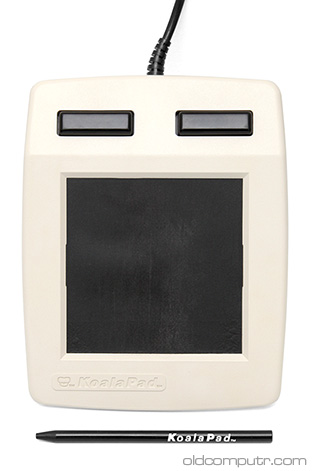
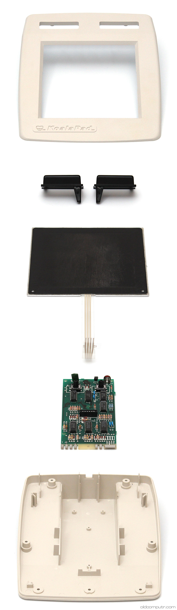
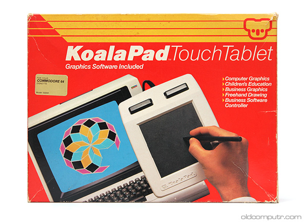
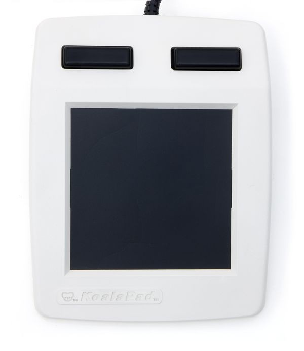

KoalaPad
Pressure-sensitive touch tablet for 8-bit home computers.

Overview
The KoalaPad was a pioneering graphics tablet introduced by Koala Technologies in 1983 and broadly marketed in 1984 for popular 8-bit home computers, including the Apple II, Commodore 64, Atari 8-bit family, TRS-80 Color Computer, and IBM PC/PCjr. Conceived by Dr. David Thornburg as an affordable drawing surface for schools, the KoalaPad brought absolute‑position input, on‑surface menu selection, and pixel‑oriented creativity to consumers long before graphic tablets became mainstream.
It consisted of a 4.5‑inch‑square resistive touch surface, a tethered stylus, and bundled software. The signature feature was a printed overlay that divided the active area into a central drawing region and labelled function, tool, and palette zones. Touching a zone with the stylus activated the corresponding command, eliminating the need for keyboard shortcuts or pull‑down menus. The bundled KoalaPainter (also called KoalaPaint or PC Design) offered standard drawing tools, plus the ability to save and create slideshows via Graphics Exhibitor.
Although the KoalaPad achieved modest commercial success, it was ultimately overshadowed by the rise of the mouse and graphical user interfaces. Its design language, however, anticipated the absolute‑position input of today’s tablets and touchscreens, and it remains a beloved artifact of early home‑computer creativity, demonstrating how the industry was already exploring alternative interaction paradigms in the early 1980s.
Deep dive
The KoalaPad was designed by Dr. David Thornburg, an educational computing consultant and author, who envisioned a low‑cost digitizing tablet that schools could use to teach art and design. Koala Technologies Corporation, based in Santa Clara, California, was founded specifically to manufacture and distribute the device. The first version targeted the Apple II, leveraging its joystick port for connection, and shipped by mid‑1983; versions for other platforms followed through 1984. The name ‘Koala’ reflected the Australian marsupial, chosen for its friendly, approachable image. The product was initially positioned as an educational tool, but home consumers embraced it for recreational drawing.
The KoalaPad’s core was a 4.5 × 4.5 inch (114 mm) resistive touch surface, consisting of two layers of conductive film separated by a thin spacer. Pressing the stylus – or a finger – pushed the layers together, creating a voltage divider that allowed the onboard circuitry to read X and Y coordinates. The pad communicated through a standard joystick port (or a dedicated interface on some systems), reporting absolute coordinates at a resolution of roughly 160 × 160 points, sufficient for the low‑resolution screens of the day. The plastic housing featured a non‑slip base and a storage slot for the stylus. A paper overlay, supplied with the software, transformed the peripheral into a command surface: a central free‑draw area, surrounded by icons for brush shapes, color selection, fill, undo, and file operations. The overlay could be swapped for different applications, such as a music keyboard for the included Music Painter utility.
Unlike contemporary mice, which moved a cursor relative to its current position, the KoalaPad reported absolute location. This meant that touching the top‑right corner of the pad always corresponded to the top‑right corner of the screen, making direct pointing intuitive and enabling a menu‑driven interface without an on‑screen pointer. In KoalaPainter, users could immediately switch between tools by tapping the labelled areas on the overlay, a paradigm now commonplace in touch‑screen applications. The drawing experience was immediate: as the stylus glided across the pad, the software would place pixels, draw lines, or create geometric shapes with real‑time feedback. The bundled Graphics Exhibitor application extended the system’s utility into slide‑show creation, letting users sequence KoalaPainter images with transitions – a precursor to presentation software. The physical overlay concept also encouraged third‑party software to design custom membrane templates, further expanding the pad’s use as a control surface for educational and music software.
The KoalaPad enjoyed a few years of moderate success. Compute! magazine reviewed the PCjr version in 1985, praising the hardware but noting that the limited resolution of early PC displays made the drawing area feel cramped. Bundles with popular computers garnered some shelf space, and the device was sold through retail chains such as Toys “R” Us. However, the rapid standardization of the mouse – accelerated by the Apple Macintosh in 1984 and later by Microsoft Windows – marginalized absolute‑position tablets. By the late 1980s, Koala Technologies had shifted its focus to another touch‑based product, the Mac ‘n Touch screen for the Macintosh, but the company ultimately folded. Despite its short commercial lifespan, the KoalaPad earned a loyal following and is today a sought‑after collector’s item and a reminder of an era when the home computer was an open canvas for experimental peripherals.
The KoalaPad stands as an important milestone in interaction design. It proved that a simple touch tablet with a static overlay could replace complex keyboard commands, foreshadowing the direct manipulation interfaces that dominate modern computing. Its absolute‑position approach directly influenced later graphics tablets, such as Wacom’s digitizers, which became standard tools for digital artists. The concept of using a printed overlay to reconfigure a touch surface reappeared in early PDAs (e.g., PalmPilot graffiti area) and in educational toys. While the mouse eventually won the desktop, the KoalaPad’s design philosophy – that a pointing device could be both a canvas and a control panel – resonates today in the touch‑first interfaces of smartphones and tablets. In the history of HCI, it remains a compelling example of an early attempt to make computing more direct, creative, and accessible.
Team & pioneers
- Dr. David Thornburg. Inventor and educational technologist; conceived the low‑cost drawing tablet for schools.
- Koala Technologies Corporation. Manufacturer and distributor, Santa Clara, California; produced the KoalaPad for multiple platforms.
Media



